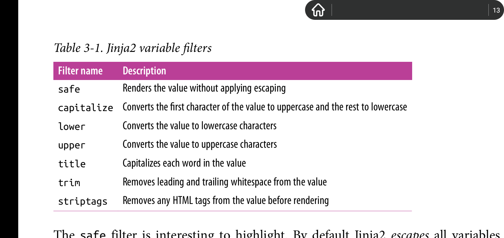
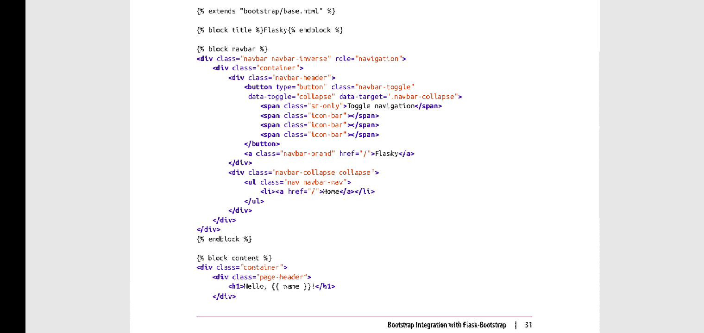
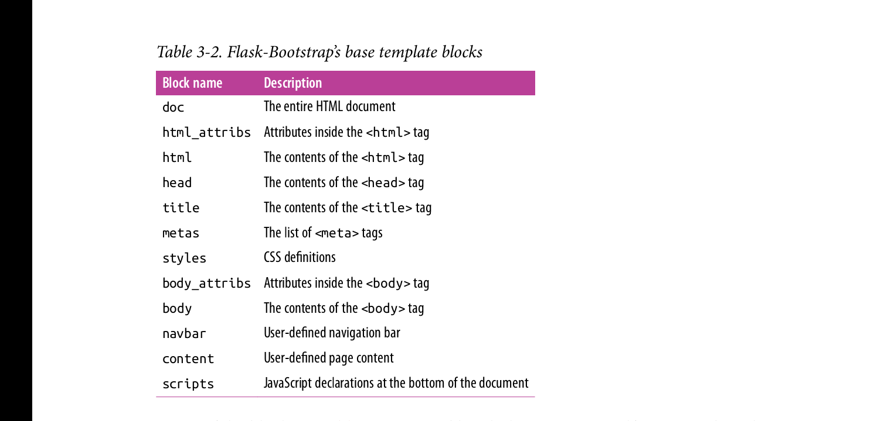
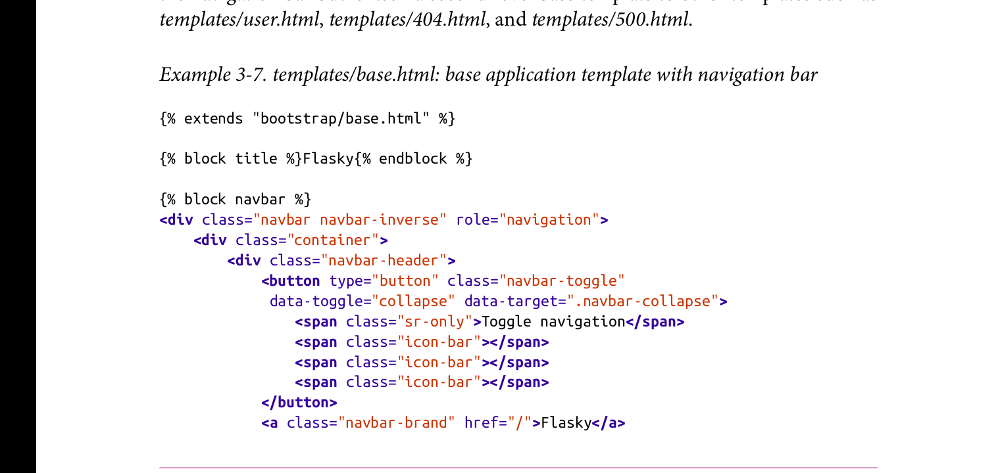
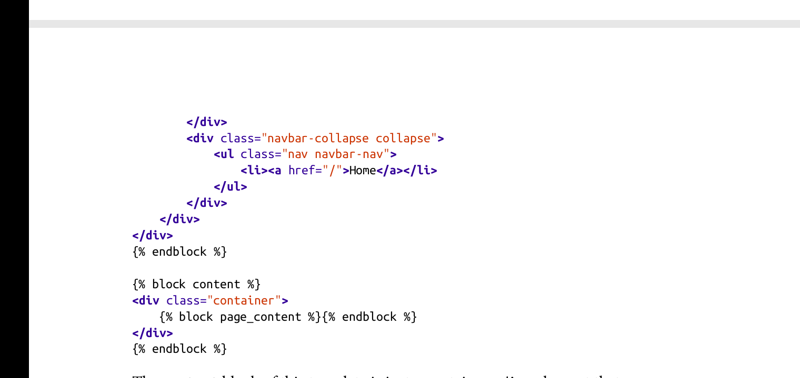
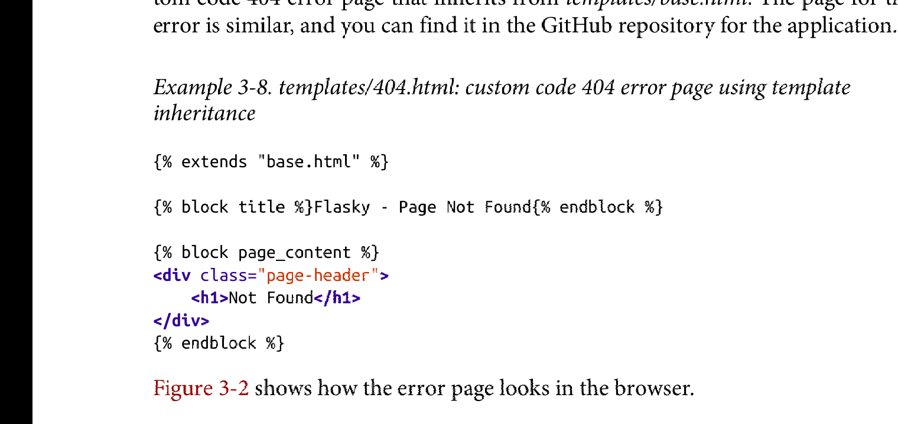

Chaper 3: Templates
View function混合了业务逻辑和渲染逻辑，这让项目难于理解和维护。
templates将渲染逻辑分离出,单独负责页面渲染。
template文件包含了响应的文本和占位符变量(placeholder variable)。这些变量代表了网页中的动态部分，只在request context下可知。
用具体值取代template中的占位变量，并返回最终响应页面的整个过程叫做渲染。
flask使用jinja2引擎处理模板渲染任务。
The Jinja2 Template Engine
在template中使用变量:
<p>this is a variable {{ var_name }}.</p>
Rendering Templates
flask默认在项目根目录下的templates子目录下寻找模板文件。
from flask import render_template
@app.route('/')
def index():
return render_template("index.html") //project_root/templates/index.html
@app.route('user/<name>')
def user(name):
return render_template("user.html", name=name) //用参数name的值取代模板文件中占位变量name。
//左边的name代表模板中的占位变量，右边的name代表函数参数name.通常左右两边的变量名相同。
Variables
模板中的{{ name }}代表占位变量,该变量在模板渲染时会被实际值替代。
jinja2自动识别模板中的变量类型。
<p>字典: {{ mydict['mykey'] }} </p>
<p>列表: {{ mylist[3] }} <p>
<p>以变量作为索引值的列表: {{ mylist[var_index] }} </p>
<p>调用对象的方法: {{ myobj.some_method() }} </p>
可以通过filter来修改变量:
Hello, {{ name|capitalize }} //这里的capitalize过滤器将name的值转化成大写形式。
以下是常用的varible filter: 
上述的safe过滤器比较有趣。处于安全原因，jinja2默认转义所有的占位变量。比如var=<p>text</p>
,jinja2会将变量转移成<p>text</p>
,当浏览器接受到该变量后，它只会显示该html片段的代码形式，而不是渲染成段落。
而safe过滤器取消了转义，使得上述变量可以正确的被渲染成html效果。
jinja2默认的这种所见即所得的特点结合python的文件读取可以用在点击某个链接显示html代码片段的场景，而不需要使用view-source去查看网页源码，很适合我写笔记。
Control Structure
jinja2提供了一些控制机制用于修改template的渲染顺序。控制语句有{% 和 %}包含。jinja2的文件搜索依据的路径规则可能默认是视templates为根目录。
选择语句:
{% if user %}
Hello {{ user }}!
{% else %}
Hello Stranger!
{% endif %}
循环语句: 渲染列表
<ul>
{% for comment in comments %}
<li> {{ comment }} </li>
{% endfor %}
</ul>
jinja2也支持宏(macro),类似于python函数:
{% macro render_comment(comment) %}
<li>{{ comment }}</li>
{% endmacro %}
<ul>
{% for comment in comments %}
{{ render_comment(comment) }} <!--注意这里的宏调用也是被{{ 和 }}包围的-->
{% endfor %}
</ul>
将宏写入以.jinja扩展名结尾的文件中，需要时通过import命令导入,该文件必须在templates文件夹下，如放在templates/macros/macros.jinja,则通过import 'macros/macros.jinja' as macro 导入。以templates为根目录。
// 定义
// templates/macros/macros.jinja
{% macro render_image(image_path) %}
<li>{{ image_path }}</li>
{% endmacro %}
// 引用
// templates/index.html
{% import 'macros/macros.jinja' as macros %}
<ul>
{% for image in images %}
{{ macros.render_image(image) }}
{% endfor %}
</ul>
部分模板重用:
使用include语句，路径也是相对于templates文件夹
// 重用navigaton面板
// templates/reuse/navigation.html
<div>
<ul>
<li>previous</li>
<li>top</li>
<li>next</li>
</ul>
</div>
//导入模板
// templates/index.html
{% include 'reuse/navigation.html' %}
使用extends语句来重用模板
{% extends parent_path %}语句中，parent_path是相对路径，视templates为根目录。规则与import一致。
类似于类继承。{% block block_name %}和{% endblock %}用于定义可被覆盖的block,父类模板定义默认block,子类模板继承父类模板，并声明相同的block来达到复写的功能。{{ super() }}表示保留父类模板的某个block,后续子类模板声明的same block将拥有父类默认的block的内容。
// 首先定义基本模板base.html,位于templates/下
<!DOCTYPE>
<html>
<head>
<title>
{% block title %}
Test
{% endblock %}
</title>
{% block style %}
<style>
.center {
margin: 0 auto;
}
</style>
{% endblock %}
</head>
<body>
{% block body %}
<p> test paragrapha. </p>
{% endblock %}
</body>
</html>
继承并复写block:
//子类模板index.html,位于templates/下
{% extends 'base.html' %} //继承父类模板
{% block title %} My Personnal Website {% endblock %}
{% block style %}
{{ super() }} //继承父类模板中style block中的原有内容。
<style> //子类模版对父类模板中的style block进行扩展。
p {
background-color: pink;
}
</style>
{% endblock %}
{% block body %}
<h1> My Personnal Website </h1>
<p> My paragraph. </p>
{% endblock %}
Bootstrap Integration With Flask-Bootstrap
bootstrap是开源的前端框架，用于提供兼容多种平台的用户界面组件。
在flask application instance被创建的同时，flask extension也会被加载。
flask-bootstrap 初始化
from flask-bootstrap import Bootstrap bootstrap = Bootstrap(app)flask extension通常从flask-<extension_name>包中导入， 并且大多数的flask extension拥有统一的实例化模版，一般是向扩展类的构造器传入application实例。
一旦flask-bootstrap实例化，则应用程序就可以访问其一切资源。
以下是使用例子:

上述图片中的bootstrap/base.html文件提供了一个基本的网页骨架，该骨架包含了所有的bootstrap 所需的css 和 js文件。user.html使用的三个block: title, navbar, content皆由base.html定义。
以下是base.html提供的预定义blocks.

上述表格中的大部分blocks由flask_bootstrap自己使用，子类模板继承时，必须使用{{ super() }}语句来保留blocks中原导入的css和js文件:
{% extends 'bootstrap/base.html' %}
{% block styles %}
{{ super() }}
<link href='..'>
...
{% endblock styles %}
Custom Error Page
让错误页面与正常页面的风格相一致。
使用app.errorhandler装饰器，为应用提供个性化的错误页面。
@app.errorhandler(404)
def page_not_found(e):
return render_template('404.html'), 404 #必须提供与错误处理器相一致的响应码作为第二个返回参数。
@app.errorhandler(500)
def internal_server_error(e):
return render_template('500.html'), 500
至于错误页面的代码，可以写一个page-base.html模版，该模版继承自bootstrap/base.html, 主要内容是统一的导航栏。
代码图片如下:



Links
当应用程序的route增多时，最终都需要Links来统一地链接所有的页面。比如navigation bar.
使用url_for为动态路由,生成url,而不是硬编码其url,这样一旦route被修改，这些写死的url就会broke.
url_for函数的用法:
1: 简单的用法是生成route function所对应的url.
-
url_for(str_view_function_name):
接受app.route装饰器定义的函数名字为参数。 -
url_for(str_endpoint_name):
接受app.add_url_route方法中传入的endpoint name作为它的参数。
from flask import url_for
@app.route('/')
def index():
return 'hello'
url_for('index') #url为 '/'， 相对路径
url_for('index', _external=True) #url为 http://localhost:5000， 绝对路径
2: 为动态路由生成url- 在url_for里使用keyword参数为动态变量url指定特定值
- 如果指定了非动态url变量的keyword变量，则以query string的形式存在于url中。
from flask import url_for
@app.route('/user/')
def register(name):
return 'register'
#生成动态url
url_for('register', name="manson", _external=True) #http://localhost:5000/user/manson
#多余的非动态部分的参数会被添加到query string中。
url_for('register', name="manson", page=2, version=1, _external=True) #http://localhost:5000/user/manson?page=2&version=1
Static files
flask 原生支持静态文件，比如图片， 文本， 视频等，通过预定义一个特殊的static路由实现: '/static/
#生成url http://localhost:5000/static/css/style.css
url_for('static', filename="css/style.css", _external=True)
因此，flask会自动在项目的根目录寻找static文件下的静态文件，可以在static文件下创建子目录来存放各类静态文件。
以下是利用static路由来在浏览器的address bar上显示favorite.icon的例子。
{% block head %}
{{ super() }}
<link rel="short icon" href="{{ url_for('static', filename='favorite.ico') }}" type="image/x-icon">
<link rel="icon" href="{{ url_for('static', filename='favorite.ico') }}" type="image/x-icon">
{% endblock head %}
Localization of Date and Time with flask-moment
使用统一的时间单位: UTC, 来获取每一位不同区域用户的local time and date, 渲染成它们想要的日期格式。
一种优美的方式是: 服务器发送统一的UTC格式的时间到浏览器，由浏览器将其转换成local time 并且格式化成用户期望的时间表示形式。
flask-moment扩展是将moment.js集成到了jinja2引擎中。
1: 初始化flask-moment扩展:
from flask_moment import Moment moment = Moment(app)2: 加载flask_moment所需的依赖:
flask_moment依赖moment.js以及jquery.js, 除了手动使用script标签加载外，flask_bootstrap已经集成了jquery.js,所以只需要手动加载moment.js就可以了。
#templates/base.html importing Moment.js library
{% extends 'bootstrap/base.html' %}
.
.
.
{% block scripts %}
{{ super() }}
{{ moment.include_moment() }} #moment对象是flask在jinja中预定义的对象，之所以有这个手动添加moment.js的方法，我猜是不禁止用户使用script标签来手动加载moment.js
{% endblock %}
3: 一个使用flask_moment的示例:
#hello.py adding a datetime variable
from datetime import datetime
@app.route('/')
def index():
return render_template('index.html', current_time=datetime.utcnow())
#templates/index.html timestamp rendering
<p>
The local date and time is {{ moment(current_time).format('LLL') }}. #format函数的参数可以是'L' ~ 'LLLL'四个不同详细程度的格式。
</p>
<p>
That was {{ moment(current_time).fromNow(refresh=True) }} #渲染时间戳，以a minute ago,然后是two minutes ago等等形式表示。
</p>
4: 以不同国家的语言渲染时间戳:
{% block scripts %}
{{ super() }}
{{ moment.include_moment() }}
{{ moment.locale('es') }}
{% endblock %}